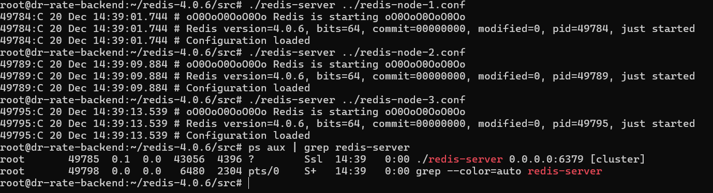
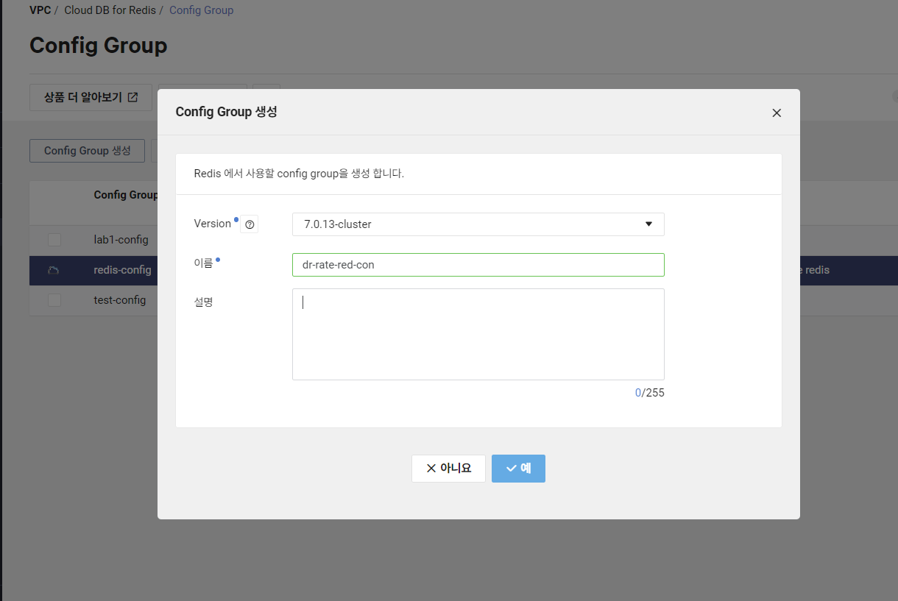
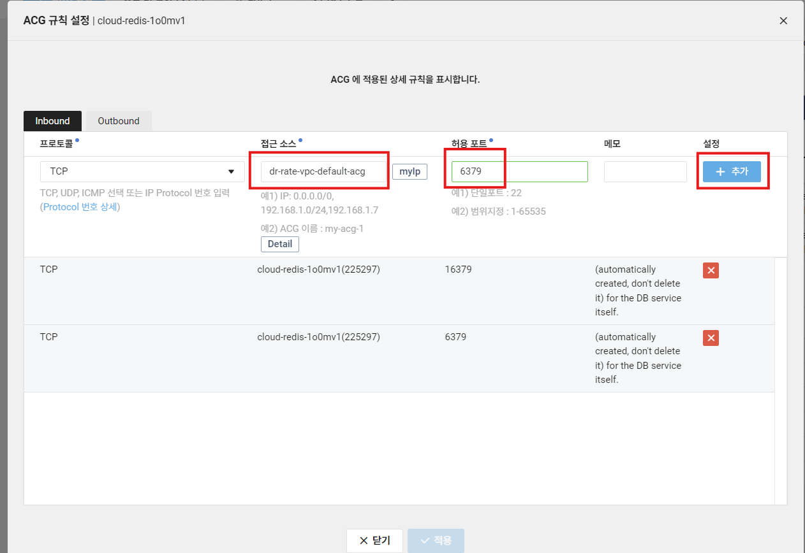
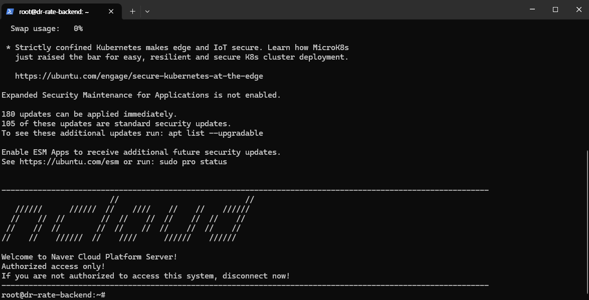
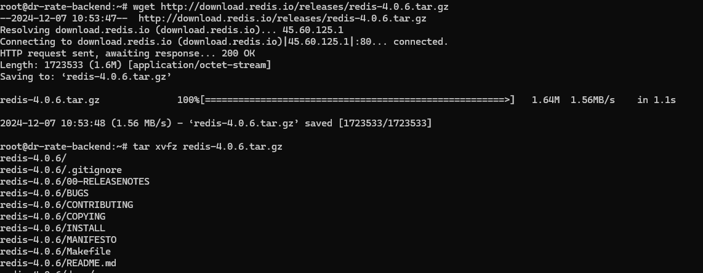
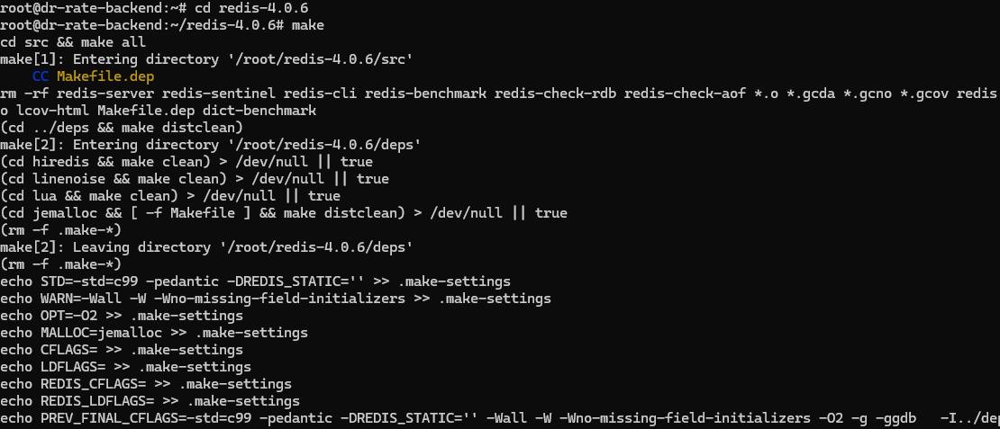

Redis Cloud 생성
- subnet 생성 (private)

- Config Group 생성

- Redis Server 생성

- redis server acg에 동일 vpc는 허용하게끔 설정


EC2 서버 접속 (동일 VPC)

EC2 서버 안에 Redis 설치
- 7.0.13 버전으로 설치해즘 (ncp도 7.0.13 버전임)
wget http://download.redis.io/releases/redis-7.0.13.tar.gz
tar xzf redis-7.0.13.tar.gz
cd redis-7.0.13
make

Spring boot와 연결하기
- Spring Boot 애플리케이션이 클러스터 노드의 외부 DNS에 접근을 하려면 Redis 클러스터 설정 파일 확인 (
redis.conf)에서 설정을 건드려야 한다bind설정bind 0.0.0.0cluster-announce-ip설정dr-rate.shop이 외부에서 접근 가능한 IP/도메인을 나타내는 경우dr-rate.shop서버에서 Redis 클러스터가 실행 중이라면,cluster-announce-ip는 해당 도메인의 외부 IP나 도메인을 사용해야 합니다.conf 코드 복사 cluster-announce-ip dr-rate.shop cluster-announce-port 6379 cluster-announce-bus-port 16379
dr-rate.shop이 프록시 서버를 통해 Redis에 접근하는 경우- 만약
dr-rate.shop이 프록시(Nginx, AWS ALB 등)로 설정되어 있고 Redis는 내부에서 실행 중이라면, 프록시가 Redis 클러스터에 트래픽을 전달할 수 있도록 내부 IP를 사용합니다. - 이 경우
cluster-announce-ip에 내부 네트워크 IP를 설정해야 합니다.
cluster-announce-ip 10.0.5.6 # Redis 노드의 내부 IP cluster-announce-port 6379 cluster-announce-bus-port 16379- 만약
- VPC 내부에서만 Redis를 사용하는 경우
- 클라이언트(Backend 서버)가 Redis와 동일한 VPC 내에 있으면, Redis 노드의 내부 IP를 사용해야 합니다.
dr-rate.shop서버가 VPC 내부에서만 Redis와 통신하면,cluster-announce-ip를 각 Redis 노드의 **내부 IP(10.0.5.x)**로 설정합니다.cluster-announce-ip 10.0.5.6 cluster-announce-port 6379 cluster-announce-bus-port 16379
- 나는 VPC 내부에서만 Redis를 사용하는 경우로 방향을 잡았다
- 먼저 ncp redis private subnet부터 확인해보자
- Redis 클러스터들 상태(3개)
- 먼저 ncp redis private subnet부터 확인해보자
- 각 Redis 노드에 대한 설정
- Redis 노드가 3개라면 다음과 같이 설정 파일을 복사한다
cp redis.conf redis-node-1.conf cp redis.conf redis-node-2.conf cp redis.conf redis-node-3.conf - 각 설정 파일 수정
- 각 설정 파일에서 노드별로 필요한 설정 값을 수정
- redis-node-1.conf
bind 0.0.0.0 port 6379 cluster-enabled yes cluster-config-file nodes-6379.conf cluster-node-timeout 5000 cluster-announce-ip 10.0.5.6 cluster-announce-port 6379 cluster-announce-bus-port 16379 appendonly yes - redis-node-2.conf
bind 0.0.0.0 port 6380 cluster-enabled yes cluster-config-file nodes-6380.conf cluster-node-timeout 5000 cluster-announce-ip 10.0.5.7 cluster-announce-port 6380 cluster-announce-bus-port 16380 appendonly yes - redis-node-3.conf
bind 0.0.0.0 port 6381 cluster-enabled yes cluster-config-file nodes-6381.conf cluster-node-timeout 5000 cluster-announce-ip 10.0.5.8 cluster-announce-port 6381 cluster-announce-bus-port 16381 appendonly yes
- redis-node-1.conf
- 각 설정 파일에서 노드별로 필요한 설정 값을 수정
- Redis 인스턴스 실행
- 각 설정 파일을 사용하여 Redis 노드를 개별적으로 실행
./redis-server ../redis-node-1.conf ./redis-server ../redis-node-2.conf ./redis-server ../redis-node-3.conf - accept to connect
- 다 켜야 하므로 백그라운드 실행을 해주자
- Redis를 백그라운드에서 실행하려면 각 설정 파일(
redis-node-1.conf,redis-node-2.conf,redis-node-3.conf)에서daemonize옵션을yes로 변경해야 한다daemonize yes - 이후 백그라운드로 실행
./redis-server ../redis-node-1.conf ./redis-server ../redis-node-2.conf ./redis-server ../redis-node-3.conf
- Redis를 백그라운드에서 실행하려면 각 설정 파일(
- 각 설정 파일을 사용하여 Redis 노드를 개별적으로 실행
- Redis 노드가 3개라면 다음과 같이 설정 파일을 복사한다
- 클러스터 초기화
- 최신
redis-cli를 사용하여 클러스터를 생성./redis-cli --cluster create 10.0.5.6:6379 10.0.5.7:6380 10.0.5.8:6381 --cluster-replicas 0
- 최신
- redis
application.yml등록spring: profiles: active: local application: name: Dr.Rate-Backend #Redis data: redis: cluster: nodes: - 10.0.5.6:6379 - 10.0.5.7:6379 - 10.0.5.8:6379
- 이후 RedisConfig에서
@Value로 하나씩 하나씩 불러와야 됨@Configuration public class RedisConfig { @Value("${spring.data.redis.cluster.nodes[0]}") private String node1; @Value("${spring.data.redis.cluster.nodes[1]}") private String node2; @Value("${spring.data.redis.cluster.nodes[2]}") private String node3; @Bean @Primary public RedisConnectionFactory redisConnectionFactory() { RedisClusterConfiguration clusterConfiguration = new RedisClusterConfiguration(); clusterConfiguration.addClusterNode(new RedisNode(node1.split(":")[0], Integer.parseInt(node1.split(":")[1]))); clusterConfiguration.addClusterNode(new RedisNode(node2.split(":")[0], Integer.parseInt(node2.split(":")[1]))); clusterConfiguration.addClusterNode(new RedisNode(node3.split(":")[0], Integer.parseInt(node3.split(":")[1]))); return new LettuceConnectionFactory(clusterConfiguration); } @Bean @Primary public RedisTemplate<String, String> redisTemplate(RedisConnectionFactory connectionFactory) { RedisTemplate<String, String> template = new RedisTemplate<>(); template.setConnectionFactory(connectionFactory); // Key와 Hash Key는 String 직렬화 template.setKeySerializer(new StringRedisSerializer()); template.setHashKeySerializer(new StringRedisSerializer()); // Value와 Hash Value는 JSON 직렬화 template.setValueSerializer(new GenericJackson2JsonRedisSerializer()); template.setHashValueSerializer(new GenericJackson2JsonRedisSerializer()); return template; } }